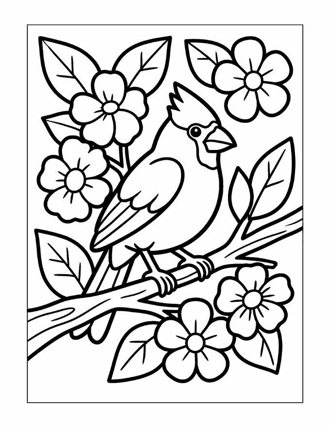
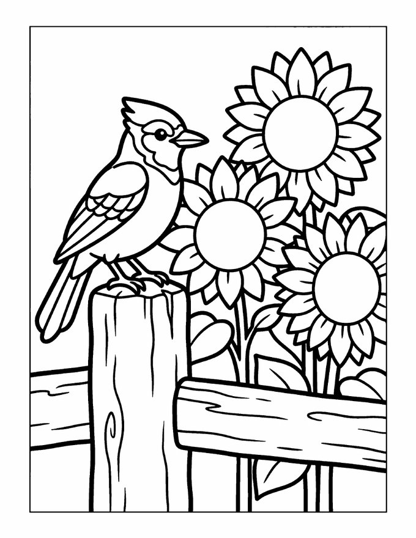
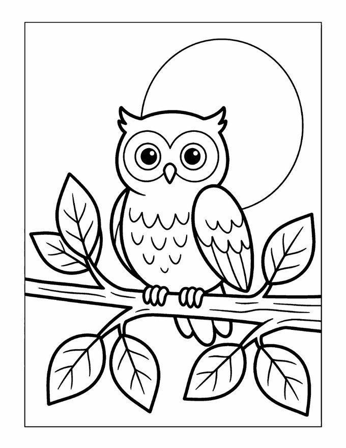
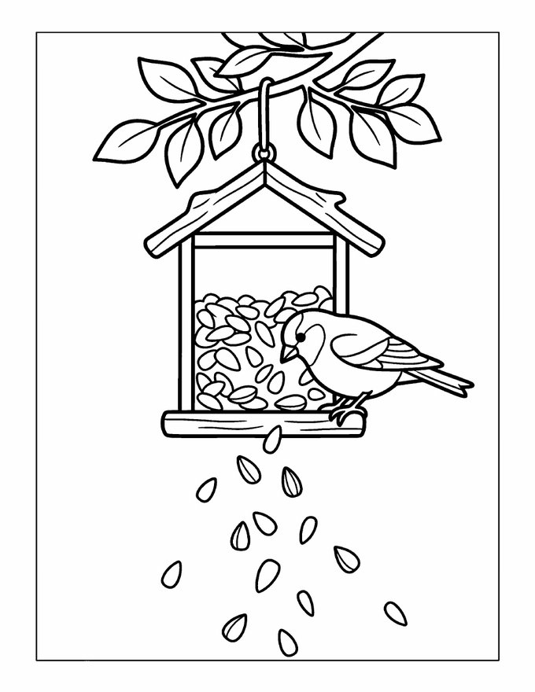

Bold & Easy Garden Birds
50 Large-Print Designs of Cardinals, Blue Jays and Songbirds
Large birds, simple flowers and plenty of room for your markers.
Fifty large-print designs of cardinals, blue jays and songbirds sit among simple flowers. The shapes are bold and open, so they are easy to color.
Each design is printed on one side of the page, with a blank page behind it.
From line art to color
One page from the book, colored in. Yours starts as plain lines like this.
A look inside




Details
- Designs
- 50
- Page size
- 8.5 × 11 in
- One side only
- Paper
- Blank page behind each design